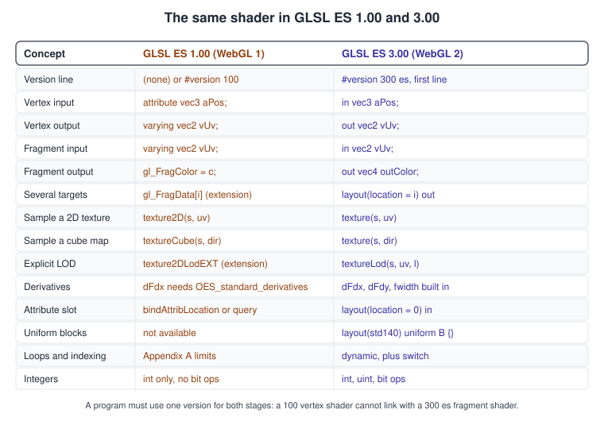
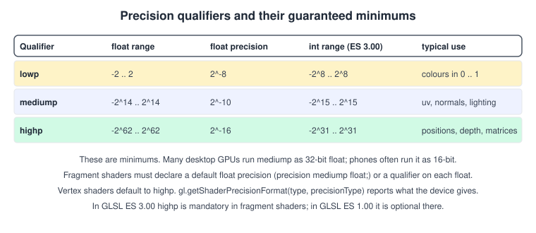
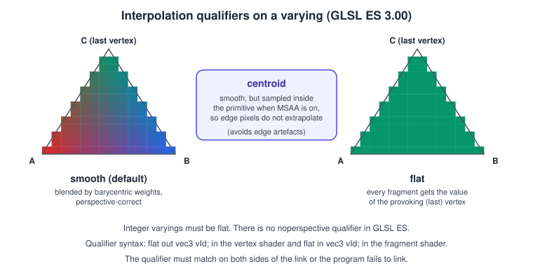

GLSL ES 1.00 and 3.00 in WebGL
|
This content was generated with the assistance of AI and should be verified against the official documentation before being relied on in production. |
A WebGL context accepts shaders written in one of two dialects of the OpenGL ES Shading Language. WebGL 1.0 (OpenGL ES 2.0) understands
GLSL ES 1.00. WebGL 2.0 (OpenGL ES 3.0) understands GLSL ES 3.00, written with a #version 300 es line, and also still compiles GLSL ES
1.00 shaders. The two look alike but are not source compatible: the keywords for shader inputs and outputs changed, the texture functions
were renamed, and a lot that was forbidden or optional in 1.00 became ordinary. Both dialects are the web variant of the same family
as desktop GLSL, so most of what you know carries over.
The facts were checked in November 2026 against the GLSL ES 1.00 and 3.00 specifications, the WebGL 1.0 and 2.0 specifications (editor’s drafts of June 2026) and the MDN documentation. The page covers GLSL ES 1.00 revision 17 and GLSL ES 3.00 revision 6, which are the revisions WebGL is defined against; WebGL 2 does not expose the newer OpenGL ES 3.1 and 3.2 shader features. Shaders run in every browser with WebGL, which for WebGL 2 means Chrome 56, Firefox 51, Edge 79 and Safari 15 or later. The examples are plain HTML and JavaScript with no library and run from a local static server.
In the Bookshelf raw WebGL track this page supports the step after the textured cover quad: the lit, rotating book that needs a normal, a light vector and a texture sample. Those shaders are written once in the portable form shown here and reused on the lighting page. The pipeline the shaders plug into is in The WebGL Rendering Pipeline; the vertex data they consume is in Buffers, Attributes, Uniforms and VAOs. For the same family of dialects on desktop, Android and iOS, see GLSL ES and Portability and Graphics, Canvas and OpenGL ES on Android; for the language in general, The GLSL Language and Shading Languages Landscape.
Two dialects, one decision
Choosing a dialect means choosing the context type, because a context only accepts what its OpenGL ES version defines:
| Context | Accepts | Version line | Typical reason |
|---|---|---|---|
|
GLSL ES 1.00 |
none, or |
Support for very old devices, or code that must stay compatible with older libraries |
|
GLSL ES 3.00 and GLSL ES 1.00 |
|
Everything new: it is available in about 97 percent of browsers |
A single program must be written in a single version. A vertex shader of version 100 cannot be linked with a fragment shader of
300 es, and the link fails with a message about mismatched versions. In a WebGL 2 context you can keep using 1.00 shaders, but new code should use 3.00: it unlocks integers, uniform blocks, texelFetch, instancing built-ins,
multiple colour outputs and dynamic loops.
The version line has to be the very first thing in the shader source, with no blank line or space before it. The most common GLSL ES 3.00 error is a template literal that starts with a newline:
// Wrong: the string starts with a newline, so the first line is not "#version 300 es"
const bad = `
#version 300 es
void main() { gl_Position = vec4(0.0); }`;
// Right: the backtick is immediately followed by the version directive
const good = `#version 300 es
void main() { gl_Position = vec4(0.0); }`;The keyword map

The vertex shader of the Bookshelf cover, in both dialects, shows nearly every difference at once.
// GLSL ES 1.00 vertex shader (WebGL 1; also accepted by WebGL 2)
attribute vec2 aPosition;
attribute vec2 aUv;
varying vec2 vUv;
uniform float uAspect;
void main() {
vUv = aUv;
gl_Position = vec4(aPosition.x / uAspect, aPosition.y, 0.0, 1.0);
}#version 300 es
// GLSL ES 3.00 vertex shader (WebGL 2 only)
layout(location = 0) in vec2 aPosition;
layout(location = 1) in vec2 aUv;
out vec2 vUv;
uniform float uAspect;
void main() {
vUv = aUv;
gl_Position = vec4(aPosition.x / uAspect, aPosition.y, 0.0, 1.0);
}// GLSL ES 1.00 fragment shader
precision mediump float;
varying vec2 vUv;
uniform sampler2D uCover;
void main() {
gl_FragColor = texture2D(uCover, vUv);
}#version 300 es
// GLSL ES 3.00 fragment shader
precision mediump float;
in vec2 vUv;
uniform sampler2D uCover;
out vec4 outColor;
void main() {
outColor = texture(uCover, vUv);
}The rules behind the map:
-
attributebecomesinin the vertex shader.varyingbecomesoutin the vertex shader andinin the fragment shader. -
The fragment colour is no longer the built-in
gl_FragColor; you declare one or more useroutvariables. -
The sampling functions lost their type suffix:
texture2DandtextureCubeare bothtexture, chosen by the sampler type.texture2DProjistextureProj,texture2DLodEXTistextureLod. -
A fragment shader still has no default float precision in either version; you must declare one (see the next sections).
-
Names beginning with
gl_are reserved for built-ins. WebGL also reserves identifiers beginning withwebgl_and_webgl_; a shader that declares one does not load.
What GLSL ES 3.00 adds
The new language is the bigger of the two changes. These are the additions that are most useful in a WebGL 2 program.
| Area | GLSL ES 1.00 | GLSL ES 3.00 |
|---|---|---|
Integers |
|
|
Loops and indexing |
The restrictions of the specification’s appendix A: |
Dynamic loops, |
Matrices |
|
Also |
Textures |
|
|
Built-in functions |
The 1.00 set |
Adds |
Derivatives |
|
Always available in fragment shaders |
Inputs and outputs |
|
|
Uniforms |
Single uniforms only |
Uniform blocks with |
Vertex and fragment built-ins |
|
Adds |
Features of OpenGL ES 3.1 and 3.2 shaders, such as compute shaders, shader storage buffers, image load and store, geometry and tessellation shaders, are not in WebGL 2, because the specification is based on OpenGL ES 3.0. Compute in the browser comes with WebGPU (see WebGPU Overview and Comparison).
Extensions in the shader
An extension that adds shader features has two sides: a JavaScript object you request with gl.getExtension, and an #extension
directive in the GLSL source that enables the symbols. In WebGL 1 you must do both.
| JavaScript name | Shader directive | Adds in GLSL ES 1.00 | In WebGL 2 |
|---|---|---|---|
|
|
|
core; |
|
|
|
core as |
|
|
|
core as |
|
|
|
core with |
Detection and fallbacks are described in Extensions.
Precision qualifiers
Shaders on phones and tablets often run in reduced precision to save power. GLSL ES lets you say how much you need with lowp, mediump
and highp, and the specification guarantees minimums rather than exact formats.

| Where | Default for float |
Default for int |
Samplers |
|---|---|---|---|
Vertex shader |
|
|
|
Fragment shader |
none: the shader does not compile without a declaration |
|
|
The usual first lines of a fragment shader are therefore:
precision mediump float; // default for every float in the file, unless a variable says otherwise
precision highp int; // optional: wider integers for ids and countersChoosing: mediump is enough for texture coordinates in small textures, colours, normals and light directions. highp is needed for
world-space positions, large texture coordinates, depth, anything that is accumulated over time, and any computation with fract of big
numbers. A frequent source of "works on my desktop but flickers on a phone" bugs is a mediump position or time value, because many
desktop GPUs treat every qualifier as 32-bit float and hide the problem.
Is highp available in a fragment shader? In GLSL ES 3.00 it is mandatory. In GLSL ES 1.00 it is optional, and a WebGL 1 program on an
old device may not have it. The shader can test the preprocessor macro, and JavaScript can query the real formats:
function describePrecision(gl) {
const types = [
['vertex', gl.VERTEX_SHADER],
['fragment', gl.FRAGMENT_SHADER],
];
const kinds = [
['lowp float', gl.LOW_FLOAT], ['mediump float', gl.MEDIUM_FLOAT], ['highp float', gl.HIGH_FLOAT],
['lowp int', gl.LOW_INT], ['mediump int', gl.MEDIUM_INT], ['highp int', gl.HIGH_INT],
];
const lines = [];
for (const [stage, shaderType] of types) {
for (const [name, precisionType] of kinds) {
const f = gl.getShaderPrecisionFormat(shaderType, precisionType);
// rangeMin and rangeMax are the log2 of the smallest and largest magnitudes; precision is the number of mantissa bits
lines.push(`${stage} ${name}: range 2^${f.rangeMin} .. 2^${f.rangeMax}, precision ${f.precision} bits`);
}
}
return lines.join('\n');
}
// A precision of 0 for HIGH_FLOAT in the fragment stage means highp is not supported there (possible in WebGL 1)// GLSL ES 1.00: use highp where the device supports it, otherwise fall back
#ifdef GL_FRAGMENT_PRECISION_HIGH
precision highp float;
#else
precision mediump float;
#endifA precision qualifier on a variable, parameter or return type overrides the default, and the precision of an expression is that of the
highest operand, so mixing a highp uniform with mediump varyings gives highp arithmetic. Precision also applies to samplers:
uniform highp sampler2D uCover; matters for float or integer textures. Integer varyings and values converted between precisions
follow the specification’s rules; do not rely on overflow behaviour.
Interpolation qualifiers
In GLSL ES 1.00 every varying is perspective-correct, smooth and floating point. GLSL ES 3.00 lets you choose, and requires the choice to match in both stages.

| Qualifier | Behaviour | Typical use |
|---|---|---|
|
Perspective-correct blend of the three vertex values |
Colours, texture coordinates, normals, positions |
|
No interpolation: each fragment receives the value of the provoking vertex, the last vertex of the triangle in OpenGL ES 3.0 |
Integer ids, material indices, per-primitive data; required for integer varyings and inputs |
|
Interpolated like |
Fixes artefacts at the edges of multisampled textured geometry |
There is no noperspective qualifier in GLSL ES. Integer types, including int and uint vectors, must be flat.
The next pair draws nine Bookshelf spines from one instanced draw call, giving each a colour from its instance number; the id travels as a flat
integer, so the fragment shader receives the exact value without any blending.
#version 300 es
// vertex shader: nine instances laid out along x, no instance buffer needed
layout(location = 0) in vec2 aPosition; // a unit rectangle, x and y from -1 to 1
flat out int vBook;
out vec2 vLocal;
void main() {
float slot = float(gl_InstanceID);
vec2 centre = vec2(-0.8 + slot * 0.2, 0.0);
gl_Position = vec4(centre + aPosition * vec2(0.08, 0.6), 0.0, 1.0);
vBook = gl_InstanceID;
vLocal = aPosition;
}#version 300 es
precision mediump float;
flat in int vBook;
in vec2 vLocal;
out vec4 outColor;
void main() {
vec3 palette[3] = vec3[3](vec3(0.60, 0.27, 0.10), vec3(0.15, 0.30, 0.55), vec3(0.20, 0.45, 0.28));
vec3 colour = palette[vBook % 3]; // dynamic indexing is allowed in GLSL ES 3.00
float shade = 0.75 + 0.25 * vLocal.x; // a smooth varying in the same shader
outColor = vec4(colour * shade, 1.0);
}// Draw the nine instances (the vertex array holds one four-vertex triangle strip rectangle)
gl.bindVertexArray(spineVao);
gl.useProgram(spineProgram);
gl.drawArraysInstanced(gl.TRIANGLE_STRIP, 0, 4, 9);Layout qualifiers and linking
Inputs and outputs have to be bound to numbers so that the JavaScript side can find them. GLSL ES 1.00 has no layout syntax: you either
let the linker pick and ask with gl.getAttribLocation(program, 'aPosition'), or you call gl.bindAttribLocation(program, 0, 'aPosition')
before gl.linkProgram, which takes effect at link time. GLSL ES 3.00 adds layout(location = n):
-
layout(location = n) inon vertex shader inputs fixes the attribute slot in the source, so a VAO can be shared among programs. -
layout(location = n) outon fragment shader outputs picks the colour attachment, which is how WebGL 2 writes to several render targets. There is nobindFragDataLocationin WebGL, so with several outputs the layout qualifier is the only way. -
Layout locations are not allowed on varyings between the vertex and fragment shader in 3.00; the names must match instead.
-
Uniform blocks use
layout(std140); their binding point is set from JavaScript withgl.uniformBlockBinding. Layouts are in Buffers, Attributes, Uniforms and VAOs.
The names of varyings must match between stages, with the same type, precision (a fragment in may use a different precision than the vertex
out, within the rules), and interpolation qualifier. A mismatch is reported by the linker, never earlier, so always read the program
info log.
A runnable page that drives both dialects
The page below paints a patterned book spine in a WebGL 1 or WebGL 2 context, selected by the query string. Open index.html for WebGL 2
and index.html?webgl=1 for WebGL 1. The same attribute slots are fixed with bindAttribLocation for both dialects, so the JavaScript
side is identical, and the sources show the keyword map in practice.
<!doctype html>
<html lang="en">
<head>
<meta charset="utf-8">
<title>Bookshelf: one shader, two dialects</title>
<style>
html, body { margin: 0; height: 100%; background: #20242c; color: #e5e7eb; font: 14px sans-serif; }
canvas { width: 100%; height: 100%; display: block; }
#info { position: fixed; left: 8px; top: 8px; padding: 4px 8px; background: rgba(0, 0, 0, 0.5); }
</style>
</head>
<body>
<canvas id="gl"></canvas>
<div id="info"></div>
<script type="module">
const canvas = document.getElementById('gl');
const wantWebGL1 = new URLSearchParams(location.search).get('webgl') === '1';
const gl = wantWebGL1 ? canvas.getContext('webgl') : canvas.getContext('webgl2');
if (!gl) throw new Error('The requested WebGL version is not available');
const isWebGL2 = typeof WebGL2RenderingContext !== 'undefined' && gl instanceof WebGL2RenderingContext;
document.getElementById('info').textContent =
`${gl.getParameter(gl.VERSION)} | ${gl.getParameter(gl.SHADING_LANGUAGE_VERSION)}`;
// Both dialects of the same shaders; the fragment shader paints gold bands on leather with a moving phase
const sources = isWebGL2 ? {
vertex: `#version 300 es
in vec2 aPosition;
in vec2 aUv;
out vec2 vUv;
uniform float uAspect;
void main() {
vUv = aUv;
gl_Position = vec4(aPosition.x / uAspect, aPosition.y, 0.0, 1.0);
}`,
fragment: `#version 300 es
precision mediump float;
in vec2 vUv;
uniform float uPhase;
out vec4 outColor;
void main() {
float band = step(0.5, fract(vUv.y * 6.0 + uPhase));
vec3 colour = mix(vec3(0.42, 0.17, 0.06), vec3(0.93, 0.78, 0.30), band * step(0.15, vUv.x) * step(vUv.x, 0.85));
outColor = vec4(colour, 1.0);
}`,
} : {
vertex: `attribute vec2 aPosition;
attribute vec2 aUv;
varying vec2 vUv;
uniform float uAspect;
void main() {
vUv = aUv;
gl_Position = vec4(aPosition.x / uAspect, aPosition.y, 0.0, 1.0);
}`,
fragment: `precision mediump float;
varying vec2 vUv;
uniform float uPhase;
void main() {
float band = step(0.5, fract(vUv.y * 6.0 + uPhase));
vec3 colour = mix(vec3(0.42, 0.17, 0.06), vec3(0.93, 0.78, 0.30), band * step(0.15, vUv.x) * step(vUv.x, 0.85));
gl_FragColor = vec4(colour, 1.0);
}`,
};
function compile(type, source) {
const shader = gl.createShader(type);
gl.shaderSource(shader, source);
gl.compileShader(shader);
if (!gl.getShaderParameter(shader, gl.COMPILE_STATUS)) {
const log = gl.getShaderInfoLog(shader);
gl.deleteShader(shader);
throw new Error(`${type === gl.VERTEX_SHADER ? 'Vertex' : 'Fragment'} shader failed:\n${log}`);
}
return shader;
}
const program = gl.createProgram();
gl.attachShader(program, compile(gl.VERTEX_SHADER, sources.vertex));
gl.attachShader(program, compile(gl.FRAGMENT_SHADER, sources.fragment));
gl.bindAttribLocation(program, 0, 'aPosition'); // same slots in both dialects, set before linking
gl.bindAttribLocation(program, 1, 'aUv');
gl.linkProgram(program);
if (!gl.getProgramParameter(program, gl.LINK_STATUS)) throw new Error(gl.getProgramInfoLog(program));
const uAspect = gl.getUniformLocation(program, 'uAspect');
const uPhase = gl.getUniformLocation(program, 'uPhase');
// x, y, u, v for a triangle strip: a tall, narrow book spine
const data = new Float32Array([
-0.25, -0.8, 0, 0,
0.25, -0.8, 1, 0,
-0.25, 0.8, 0, 1,
0.25, 0.8, 1, 1,
]);
const buffer = gl.createBuffer();
gl.bindBuffer(gl.ARRAY_BUFFER, buffer);
gl.bufferData(gl.ARRAY_BUFFER, data, gl.STATIC_DRAW);
// WebGL 1 has no vertex array objects without an extension, so the pointers are set up each frame in both modes
function bindAttributes() {
gl.bindBuffer(gl.ARRAY_BUFFER, buffer);
gl.enableVertexAttribArray(0);
gl.vertexAttribPointer(0, 2, gl.FLOAT, false, 16, 0);
gl.enableVertexAttribArray(1);
gl.vertexAttribPointer(1, 2, gl.FLOAT, false, 16, 8);
}
function frame(time) {
const w = Math.max(1, Math.round(canvas.clientWidth * devicePixelRatio));
const h = Math.max(1, Math.round(canvas.clientHeight * devicePixelRatio));
if (canvas.width !== w || canvas.height !== h) { canvas.width = w; canvas.height = h; }
gl.viewport(0, 0, gl.drawingBufferWidth, gl.drawingBufferHeight);
gl.clearColor(0.13, 0.14, 0.17, 1);
gl.clear(gl.COLOR_BUFFER_BIT);
gl.useProgram(program);
bindAttributes();
gl.uniform1f(uAspect, gl.drawingBufferWidth / gl.drawingBufferHeight);
gl.uniform1f(uPhase, time * 0.0003);
gl.drawArrays(gl.TRIANGLE_STRIP, 0, 4);
requestAnimationFrame(frame);
}
requestAnimationFrame(frame);
</script>
</body>
</html>Source: MDN: Getting started with WebGL
Porting a GLSL ES 1.00 shader to 3.00
Most of the port is mechanical. The following steps, in order, convert almost every WebGL 1 shader:
-
Add
#version 300 esas the first line. -
In the vertex shader, rename
attributetoinandvaryingtoout. In the fragment shader, renamevaryingtoin. -
In the fragment shader declare an output, for example
out vec4 outColor;, and replace everygl_FragColorwith it. Replace eachgl_FragData[i]with its ownlayout(location = i) out. -
Rename
texture2D,textureCube,texture2DProjandtexture2DLodEXTtotexture,textureProjandtextureLod. -
Delete
#extensionlines for the extensions that became core (see the table above). Renamegl_FragDepthEXTtogl_FragDepth. -
If a variable is called
texture,round,sample,in,out,flat,smoothor any other newly reserved word, rename it. -
Fix integer code that relied on 1.00 limits and consider now-legal dynamic indexing.
The first five steps can be automated for simple shaders. The helper below converts a 1.00 vertex or fragment shader to 3.00; treat it as a starting point, because regular expressions do not understand GLSL scoping.
/**
* Convert simple GLSL ES 1.00 source to GLSL ES 3.00.
* stage is 'vertex' or 'fragment'. Throws on constructs it cannot translate.
*/
export function glsl100To300(source, stage) {
if (/\b(float|vec[234]|int|sampler\w+)\s+texture\b/.test(source)) {
throw new Error('A variable called "texture" must be renamed before conversion');
}
let out = source
.replace(/^\s*#version\s+100[^\n]*\n/, '')
.replace(/^\s*#extension\s+GL_(OES_standard_derivatives|EXT_shader_texture_lod|EXT_frag_depth)[^\n]*\n/gm, '')
.replace(/\btexture2DProj\b/g, 'textureProj')
.replace(/\btexture2DLodEXT\b/g, 'textureLod')
.replace(/\btexture2D\b/g, 'texture')
.replace(/\btextureCube\b/g, 'texture')
.replace(/\bgl_FragDepthEXT\b/g, 'gl_FragDepth');
if (stage === 'vertex') {
out = out.replace(/\battribute\b/g, 'in').replace(/\bvarying\b/g, 'out');
} else {
if (/\bgl_FragData\b/.test(out)) {
throw new Error('gl_FragData needs hand-written layout(location = n) out declarations');
}
out = out.replace(/\bvarying\b/g, 'in').replace(/\bgl_FragColor\b/g, 'outColor');
// The output must be declared after the precision statement that precedes it, or with its own precision
if (!/precision\s+\w+\s+float\s*;/.test(out)) throw new Error('Declare a default float precision first');
out = out.replace(/(precision\s+\w+\s+float\s*;)/, '$1\nout highp vec4 outColor;');
}
return '#version 300 es\n' + out;
}
// Example
const fragment100 = `precision mediump float;
varying vec2 vUv;
uniform sampler2D uCover;
void main() { gl_FragColor = texture2D(uCover, vUv); }`;
console.log(glsl100To300(fragment100, 'fragment'));The reverse direction, 3.00 to 1.00, cannot be automated in general because of integers, uniform blocks and texelFetch; keep a 1.00
fallback only if you really need WebGL 1, and write the shared parts once in a snippet that both dialects include. A small preamble
that maps the keywords is a common alternative to maintaining two copies:
// preamble for GLSL ES 3.00: lets 1.00-style source compile unchanged
#define attribute in
#define varying in
#define texture2D texture
#define textureCube textureUse one preamble per stage (for the vertex stage varying must map to out), and build the final source by concatenating the version
line, the preamble and the shared body.
What 1.00 restricts that 3.00 allows
Appendix A of the GLSL ES 1.00 specification defines the minimum a WebGL 1 implementation must support, and WebGL 1.0 requires shaders to stay inside it: shaders written for other versions or for desktop GLSL must not load. The restrictions that surprise people:
-
whileanddo-whileloops are not allowed, andforloops need a constant loop count that the compiler can determine. -
In a fragment shader, arrays and matrices can be indexed only with constant-index expressions; in a vertex shader, dynamic indexing is only guaranteed for uniforms.
-
There is no integer bit manipulation, no
switch, and%does not exist. -
highpin fragment shaders is optional,mediump intmay cover only the range -1024 to 1024. -
No matrix inverse or transpose, no
roundandtrunc. -
There is a limit on the total instruction count that is device-specific and not queryable.
Many of these are lifted in GLSL ES 3.00, but not everything: GLSL ES 3.00 still has no recursion, no pointers, no dynamic memory and
no implementation-independent limit on uniforms, so always consult MAX_VERTEX_UNIFORM_VECTORS, MAX_FRAGMENT_UNIFORM_VECTORS and
MAX_VARYING_VECTORS (see the pipeline page for minimum values).
Seeing what the browser compiled
WebGL implementations do not pass your GLSL to the driver untouched. Chrome, Firefox and Safari validate and translate it (Chrome and
Firefox use ANGLE’s shader translator), which rewrites it for Direct3D, Metal, Vulkan or desktop OpenGL. When a shader behaves
differently on one machine, the translated text helps. The WEBGL_debug_shaders extension returns it, for debugging only, and the extension
may be unavailable in some browsers.
function logTranslatedSource(gl, shader) {
const ext = gl.getExtension('WEBGL_debug_shaders');
if (!ext) {
console.info('WEBGL_debug_shaders is not available here');
return;
}
// call after gl.compileShader succeeded
console.log(ext.getTranslatedShaderSource(shader));
}Source: MDN: WEBGL_debug_shaders
Always read gl.getShaderInfoLog after compiling and gl.getProgramInfoLog after linking. Error line numbers refer to your source
string, which is why starting a template literal with a newline (and shifting every line by one) makes logs confusing. Expensive
programs can take hundreds of milliseconds to compile and link on some platforms, so the KHR_parallel_shader_compile extension lets
the browser compile in the background while you poll:
const parallel = gl.getExtension('KHR_parallel_shader_compile');
function whenProgramReady(program) {
return new Promise((resolve, reject) => {
function check() {
if (parallel && !gl.getProgramParameter(program, parallel.COMPLETION_STATUS_KHR)) {
requestAnimationFrame(check); // still compiling, keep rendering other things
return;
}
if (gl.getProgramParameter(program, gl.LINK_STATUS)) {
resolve(program);
} else {
reject(new Error(gl.getProgramInfoLog(program)));
}
}
check();
});
}
// Call gl.linkProgram(program) for every program first, then await whenProgramReady for eachSource: MDN: KHR_parallel_shader_compile
For validating shaders outside the browser, Khronos publishes a reference compiler front end, glslang, whose glslangValidator command-line
tool accepts #version 300 es sources; see GLSL ES and Portability for a
workflow. The validator and the browser translator can differ in what they accept, so the browser result is final.
Common mistakes
-
Starting the shader string with a blank line or indentation before
#version 300 es. -
Linking a vertex shader of one version with a fragment shader of another.
-
Forgetting
precision mediump float;in a fragment shader, which fails to compile in both versions. -
Using
gl_FragColorortexture2Din a 3.00 shader, ortextureandinin a 1.00 shader. -
Declaring an integer varying without
flat, or aflatqualifier on only one stage. -
Calling
gl.bindAttribLocationaftergl.linkProgram, which has no effect until the next link. -
Requesting
OES_standard_derivativesin a WebGL 2 context. The call returns null because derivatives are built in; the extension directive in a 3.00 shader is also not needed. -
Assuming the compile succeeded:
compileShadernever throws, and a failed shader only shows up in the status and the log. -
Trusting
mediumpprecision on desktop. Test on a phone or force precision emulation in your tooling. -
Naming identifiers with
webgl_or_webgl_prefixes, which WebGL reserves. -
Dynamic indexing of uniform arrays in GLSL ES 1.00 fragment shaders (not allowed there).
Performance notes
-
Compile and link asynchronously where the extension exists, and warm up programs while a loading screen is shown.
-
Precision qualifiers matter on mobile GPUs:
mediumparithmetic can be faster on some mobile GPUs. The qualifiers have little effect on most desktop GPUs. -
Branches on uniforms are cheap; branches on varying or texture data may run both sides because pixels in a quad execute together.
-
Reduce varyings (each
vec4slot costs interpolation bandwidth) and pack twovec2values into onevec4when you can. -
Integer arithmetic and bit operations in 3.00 are efficient, but integer division and modulo are slower than float operations on some GPUs.
-
Use uniform blocks to update many uniforms with one buffer upload instead of dozens of
gl.uniform*calls. -
Keep the number of distinct programs small and sort draws by program; switching programs is a state change.
Where older material is outdated
| Older statement | Today |
|---|---|
PAR chapter 3 introduces shaders as GLSL ES 1.00 only, with |
Still valid for WebGL 1. WebGL 2 uses |
LTJ chapter 4 and chapter 11 and TCB chapter 5 write custom shaders for three.js r69 with |
three.js |
Books use |
|
Guides say shader code cannot be inspected once the browser has compiled it. |
|
Guides claim |
It is mandatory in GLSL ES 3.00 and optional in 1.00; use |
Recent changes
| When | Change |
|---|---|
January 2017 onward |
WebGL 2.0 shipped with GLSL ES 3.00 in Chrome 56 and Firefox 51, in Edge 79 and in Safari 15 (2021). |
three.js r163 (2024) |
|
June 2026 |
The WebGL 1.0 and 2.0 specification editor’s drafts were last updated. WebGL 2.0 is still defined against GLSL ES 3.00; OpenGL ES 3.1 and 3.2 shader features are not part of it. |
See it in
-
Shading Languages Landscape for the general concept page
-
The GLSL Language and GLSL ES and Portability in the OpenGL section
-
Custom Shaders in three.js for
ShaderMaterialandglslVersion -
WebGPU Overview and Comparison for the WGSL equivalent